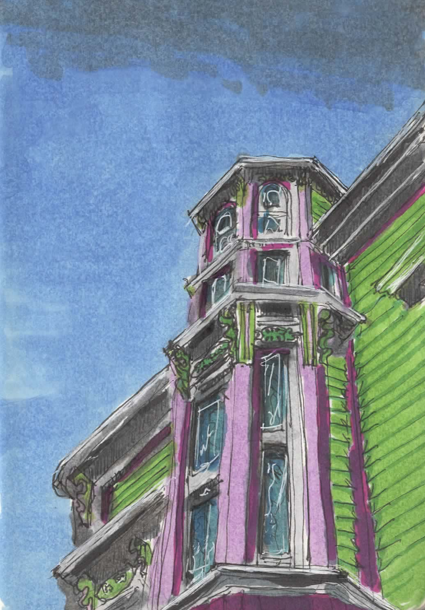

Lunenburg Events
Music, theatre, arts, and community — for the next two weeks.
Upcoming events in Lunenburg
Saturday, November 28
12:00 PM
— Christmas by the Sea Market — at King Street
2:00 PM
— Lunenburg Christmas Parade — at Lincoln Street
6:00 PM
— Lighting of Trees — at Lunenburg Heritage Bandstand
7:00 PM
— First of Bells - Encore Performance — at Old Confidence Lodge
7:00 PM
— Ellita Gagner: Songs My Mother Taught Me — at LAMP
Sunday, November 29
2:00 PM
— CANCELLED - Victor Fraser - Tea & Scones Concert — at Old Confidence Lodge
Tuesday, December 1
12:00 PM
— Tunes on Tuesday: Piotr Kozłowski, Part 2 — at LAMP
Thursday, December 3
8:00 AM
— Lunenburg Farmers Market — at Lunenburg Community Centre
Friday, December 4
2:00 PM
— The True Tale of Hansel & Gretel (Matinee) — South Shore Players — at South Shore Players
7:00 PM
— The True Tale of Hansel & Gretel (Evening) — South Shore Players — at South Shore Players
"THE CHRISTMAS TREE" by the Lunenburg Theatre Collective: Dec. 4, 5 & 6 — at Lunenburg School of the Arts
Saturday, December 5
2:00 PM
— The True Tale of Hansel & Gretel (Matinee) — South Shore Players — at South Shore Players
2:00 PM
— Geoff and Glenn — at Lunenburg School of the Arts
7:00 PM
— The True Tale of Hansel & Gretel (Evening) — South Shore Players — at South Shore Players
7:00 PM
— Piotr Kozłowski, piano — at LAMP
TBA
— Lunenburg Christmas Craft Festival — at Lunenburg War Memorial Arena
Sunday, December 6
2:00 PM
— The True Tale of Hansel & Gretel (Matinee) — South Shore Players — at South Shore Players
7:00 PM
— The True Tale of Hansel & Gretel (Evening) — South Shore Players — at South Shore Players
TBA
— Lunenburg Christmas Craft Festival — at Lunenburg War Memorial Arena
Tuesday, December 8
7:00 PM
— Messiah — at St. John's Anglican Church
Thursday, December 10
8:00 AM
— Lunenburg Farmers Market — at Lunenburg Community Centre
6:00 PM
— LHS Speaker Series: Dr. Hilary Doda — Dress and Textiles in Pre-Deportation Acadia — at Lunenburg School of the Arts
Friday, December 11
2:00 PM
— The True Tale of Hansel & Gretel (Matinee) — South Shore Players — at South Shore Players
7:00 PM
— The True Tale of Hansel & Gretel (Evening) — South Shore Players — at South Shore Players
Saturday, December 12
2:00 PM
— The True Tale of Hansel & Gretel (Matinee) — South Shore Players — at South Shore Players
5:30 PM
— Holiday Jazz — at LAMP
7:00 PM
— The True Tale of Hansel & Gretel (Evening) — South Shore Players — at South Shore Players
10 AM
— Yuletide Market — at Lunenburg School of the Arts
Loading events…